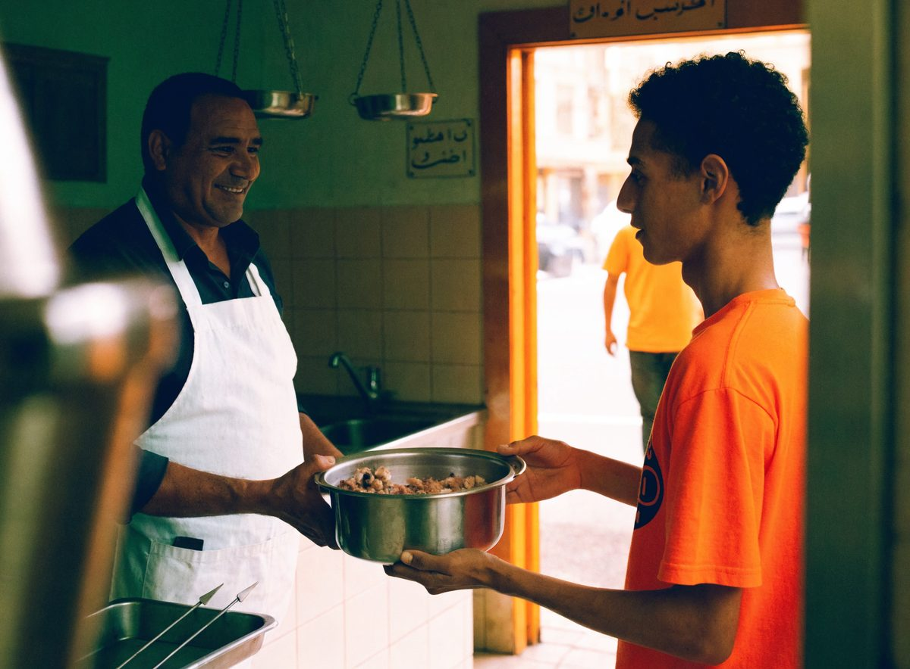
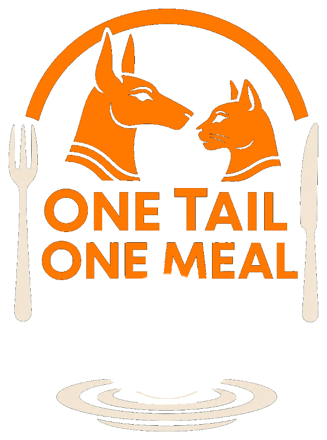
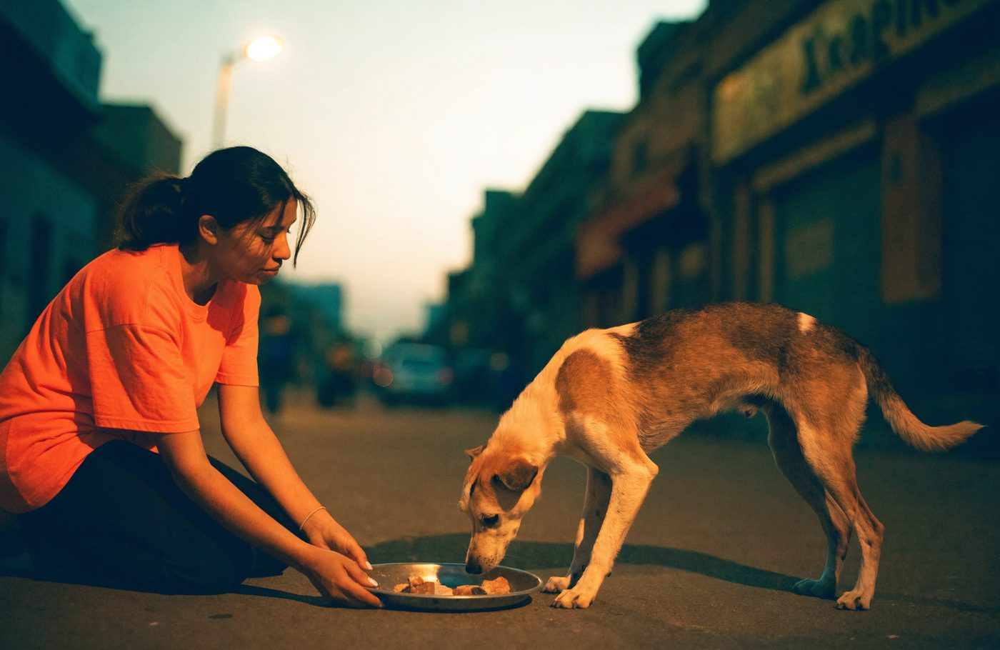
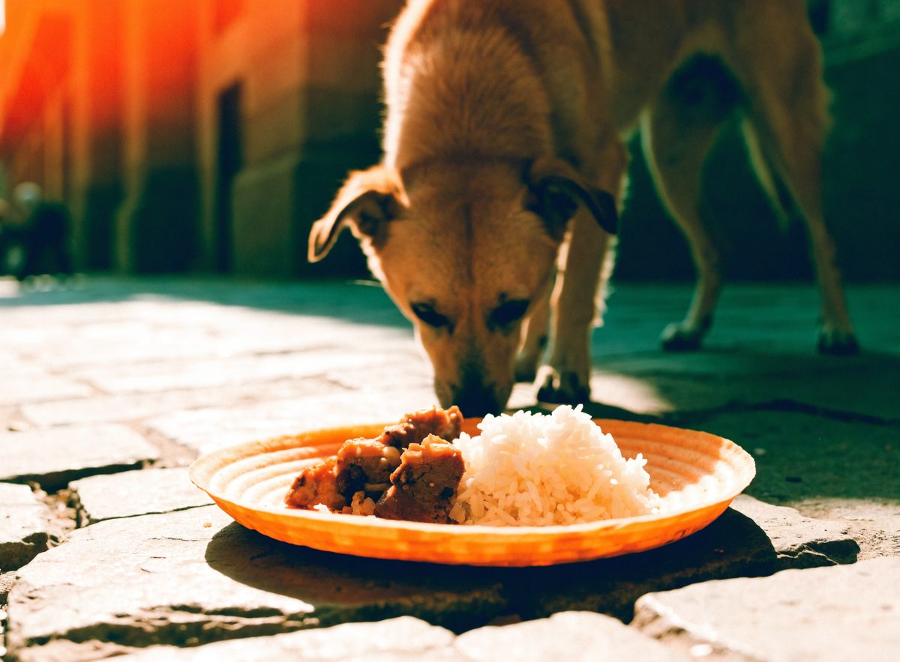
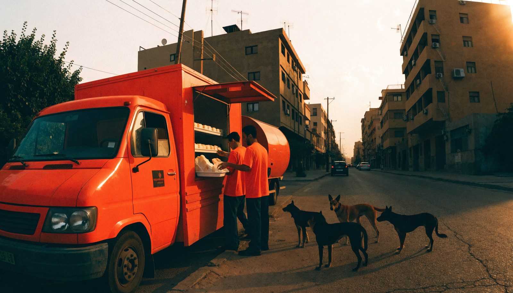
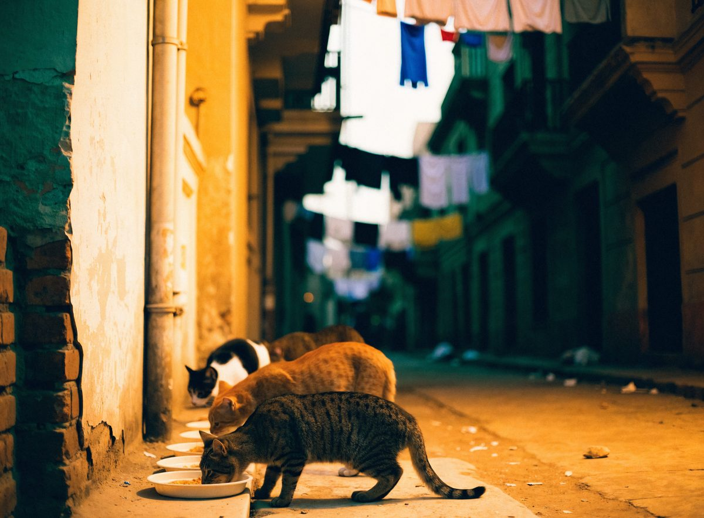

1
Collect
The truck stops at partner butchers each morning for the chicken, beef and bone they would otherwise bin — free, and gladly given.
Thousands of dogs and cats live on Egypt’s streets, and most of them go to sleep hungry. We are building a food truck that collects the meat butchers would throw away, cooks it safely on board, and serves it warm to the animals where they already are.

One Tail One Meal feeds the street animals of Cairo, one warm meal at a time, and builds the tools that let people anywhere in the world do the same for the animals on their own streets.

We are a couple — one of us Egyptian-Australian, the other a long-time giver to animal charities — and for years we have fed whatever animals we came across, out of our own pocket, one meal at a time.
It never felt like enough. You feed a dog on a Tuesday and you lie awake wondering about the Wednesday. So we decided to build something that keeps turning up: the same truck, the same streets, every day.
Our message is simple: no stray should go hungry.
Every day, Cairo’s butchers throw away meat and bone that is perfectly good for animals. Every day, the animals a few streets away go hungry. The truck closes that gap.

The truck stops at partner butchers each morning for the chicken, beef and bone they would otherwise bin — free, and gladly given.

It is cooked on board in a sealed food-grade drum, so what reaches an animal is hot, clean and safe — never raw scraps off the street.

A local driver who knows the animals runs the same round every day: streets, alleys, markets and the quiet corners where colonies live.

Meals go out on plates pressed from carrot and potato. The animal eats the plate too, so nothing is left on the street behind us.
No waste. No litter. No empty bellies.
A hungry animal becomes desperate. A fed animal becomes calm, gentle and hopeful.
Feeding them does more than fill a stomach. It lowers the fear on both sides, it makes a street safer for the children who play on it, and it shows everyone watching that these animals are worth something. Sometimes the biggest change starts with a warm meal on a cold street.

The truck is a road-legal van with a food-grade rotating drum on the back — the same idea as a cement mixer, turned to better use. Sealed bins for ingredients, cold storage, a cooker, a wash sink and a serving hatch, all in a vehicle small enough for Cairo’s back streets.
Every detail, from the hygiene routine to the permits we need, is set out on the truck page.
Look inside the truckTo build the first truck, license it, and pay a local animal lover to drive it every day, we need people who believe compassion should not stop at a border.
Every donation, whatever the size, becomes a full belly, a wagging tail, and one more animal who learns that a human hand can mean something good.
Ideas, introductions, a day on the round, help reaching people who care. Volunteers have shaped almost everything here so far.
If you have trimmings and bone at the end of the day, that is a truck full of meals. Tell us where you are and we will build the round around you.
A street, an office or a school collecting food or funds together does more than any one of us can alone.
Spot a Paw is the app we built so anyone can report an animal in trouble, plan a feeding round, or pass on spare meat.
Open Spot a Paw
Questions, an offer of help, or a street that needs us — we read everything.
Email us support@spot-a-paw.com